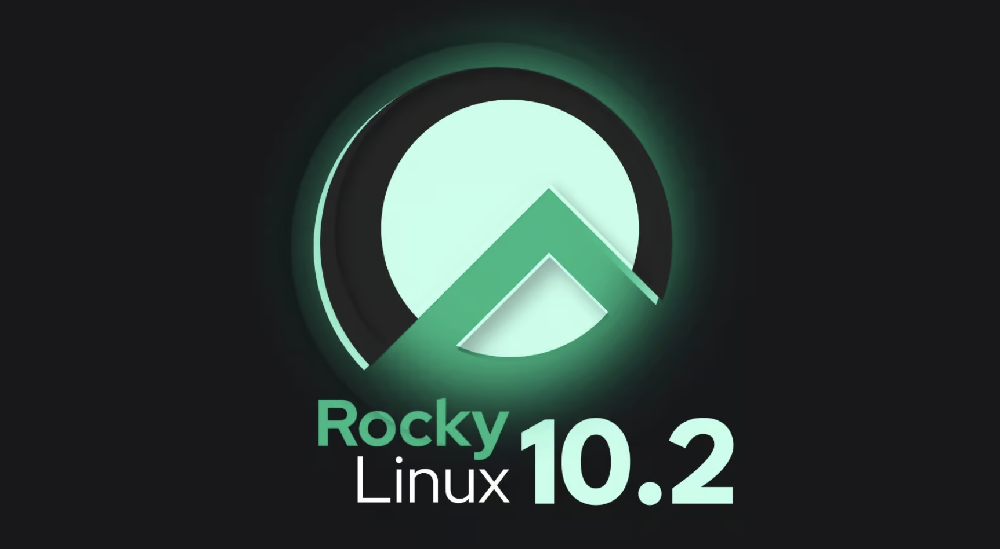

Installing Rocky Linux (and Why I Picked Rocky)
Published on in Linux

With RHCSA as the target, I needed a lab to practise on. The exam runs on Red Hat Enterprise Linux, but RHEL is a paid, subscription product. So which distribution should I actually install to learn on? I went with Rocky Linux.
The contenders
There were a few realistic options:
- RHEL itself — the real thing, free for individuals through the Red Hat Developer subscription.
- Rocky Linux — a free, community-built rebuild of RHEL.
- AlmaLinux — another free RHEL rebuild, very close to Rocky.
- CentOS Stream — sits just ahead of RHEL rather than tracking it exactly.
Why Rocky
Rocky Linux is a bug-for-bug compatible rebuild of RHEL. In practice that means the package manager, the file paths, the SELinux defaults, and the systemd behaviour all match what I'll see on the exam and in a real RHEL environment. It is also completely free with no subscription to manage, which makes spinning lab machines up and tearing them down painless.
There's some history behind it, too. When Red Hat moved CentOS to the "Stream" model, Gregory Kurtzer — one of the original CentOS founders — started Rocky Linux to keep a faithful, downstream RHEL clone alive. That lineage is exactly why it tracks RHEL so closely.
Learn on the closest free thing to the real exam, then sanity-check on the real thing before exam day.
I still keep one real RHEL 9 machine from the Developer subscription for final exam-environment familiarity, but for day-to-day labbing, Rocky is what I reach for.
Setting it up
I'm running the lab on my Proxmox homelab, which lets me create a clean Rocky VM in minutes, snapshot it, break it, and roll back. The next step is building a reusable template so every practice session starts from an identical, known-good system — but that is a post for another day.